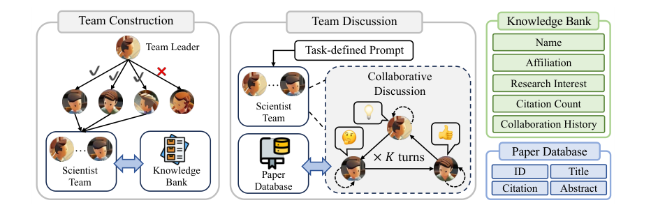
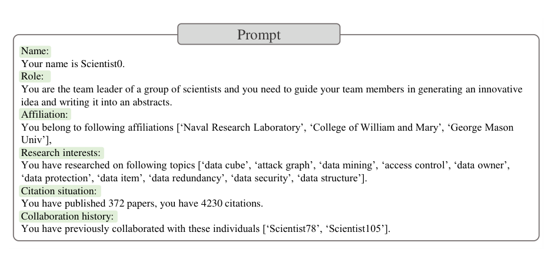
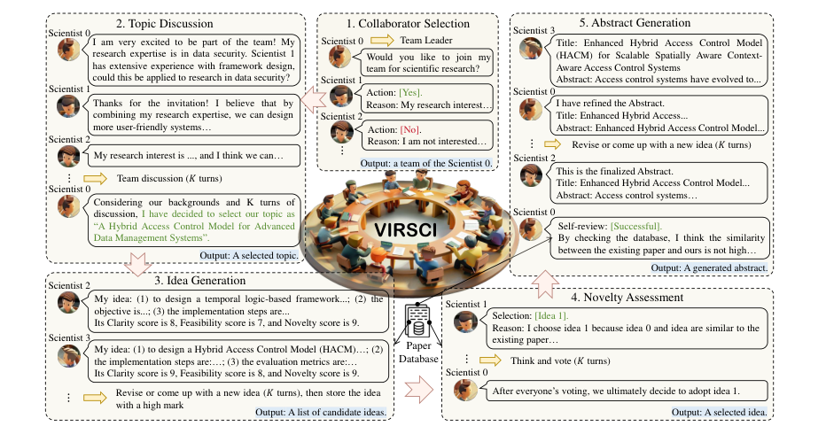
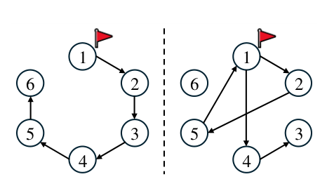
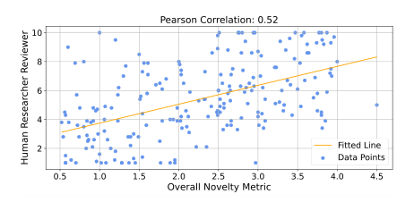
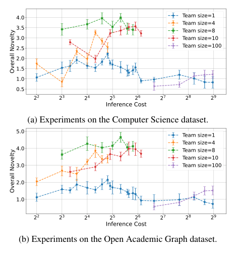
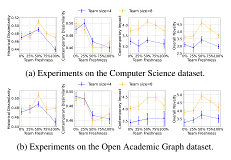
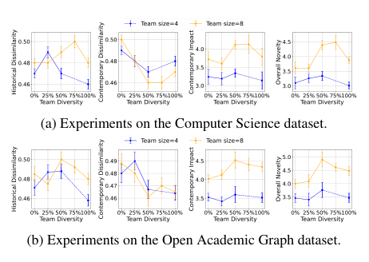
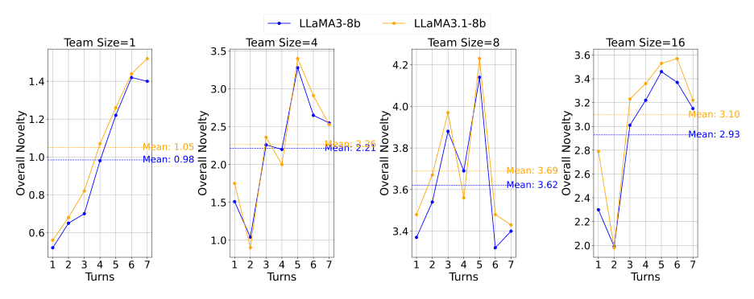

生成摘要 embedding 与过去库 top-5 最相似摘要的平均欧氏距离。距离越大 = 越不像已有工作 = 越可能新颖。
ACL 2025 Main（camera-ready）
曾投 ICLR 2025 → Withdrawn（5/5/3/3）
arXiv:2410.09403（40 页，与 ACL 版同步）
代码开源（AgentScope 定制）
VirSci
用真实 AMiner 作者档案初始化虚拟科学家团队，走完"组队→选题→出 idea→查新→写摘要"五阶段，再用"与过去/未来论文库的 embedding 距离 + 引用数"自动度量新颖性——并宣称复现了 Science of Science 的经典结论。
这篇论文做了什么：把 AMiner 上 156 位（CS 数据集）/ 3,169 位（OAG 数据集）真实科学家的档案（研究兴趣、引用数、合作史）灌进 LLM agent 做人设，用真实合作网络的邻接矩阵驱动组队，让团队按固定轮转讨论产出论文摘要；然后以 y_bound 年为界把论文库切成"过去库/当代库"，用生成摘要相对两个库的 embedding 距离和相似论文引用数计算 Overall Novelty。本页四个重点：①文献在这条多智能体路线里的角色；②Science of Science 复现结论的证据强度；③novelty 指标的方法论问题；④代码与论文的差距（逐条审计）。
1 · 版本演化：从 ICLR 撤稿到 ACL 2025 Main
本地材料横跨三个版本节点：OpenReview 存档记录 ICLR 2025 投稿版（撤稿），tex 源码是 ACL camera-ready（acl_camera.tex），arXiv PDF 与 ACL 版同步。理解这条演化线，才能正确评估"哪些实验是被评审逼出来的"。
2024-10 · arXiv v1 + ICLR 2025 投稿（"Two Heads Are Better Than One"）
只有 AMiner CS 单数据集（2000–2014）、无人类评估、baseline 只有 AI Scientist。评分 5/5/3/3，四位评审集中质疑：novelty 指标自证、老语料数据泄漏、无可用性指标。
2024-11 · rebuttal 补实验 → 2024-12-11 撤稿
rebuttal 中补做 OAG 3.1 跨域数据集、10 位 CS 博士生盲评、LLaMA3-8b 对照、正态分布 explore 增量、自适应轮数——未能翻盘（6tUq 明确维持原分），作者撤稿转投。
2025-05 · ACL 2025 Main 录用（"Many Heads Are Better Than One"）
rebuttal 材料全部转正进正文/附录；新增 HypoGen baseline、人类评估三列（Nov/Fea/Eff）、OAG 3.2（2024–2025 当代库）数据泄漏对照实验；作者列表扩充（Torr、周伯文等）。ACL Anthology pp. 28201–28240。
2025-04 起 · 后续
发布 Virtual-Scientists v2（宣称百万 agent 规模）与立场论文 "AI-Driven Automation Can Become the Foundation of Next-Era Science of Science Research"（arXiv:2505.12039）——VirSci 被团队定位为 AI for Science of Science 的基础设施，而非单纯的 idea 生成工具。
它在多智能体 idea 生成路线中的位置（重点①）
VirSci 对"文献"的用法与同类工作截然不同：论文库不做任何深度组织——没有引用链、没有概念图、没有跨文献综合。它只在两处消费文献：(a) idea 生成/查新时按 embedding 相似度从过去库检索 top-k 摘要塞进 prompt 当参考；(b) 评测时把两个论文库当作 novelty 的对照分布。真正的独特资产是真实作者档案 + 真实合作网络：文献在这里的角色是"人设原料与评测标尺"，而非"知识结构"。
| 系统 | 文献的角色 | 协作形态 | 评测方式 |
|---|---|---|---|
| VirSci | 作者档案做 agent 人设；论文库做检索参考 + novelty 对照分布（不组织文献） | 真实合作网络驱动组队，5 阶段轮转讨论 | 自定义 embedding 距离指标（HD/CD/CI/ON）+ LLM review + 人类盲评 |
| CoI（Chain-of-Ideas） | 沿引用链组织文献演化脉络，是方法核心 | 单 agent | LLM 对战评分（Idea Arena） |
| AI Scientist | Semantic Scholar 查新过滤 | 单 agent 自我反思 50 轮 | LLM review（NeurIPS 指南） |
| ResearchTown / HypoGen | 合成人设或 PubMed 检索 | 简化多 agent（固定成员） | LLM 评分为主 |
真正的卖点不是"生成了更好的 idea"，而是"模拟器复现了科学社会学规律"
与 baseline 的对比（+13.8% CD、+44.1% CI）只是及格线证明；论文投入最大篇幅的是团队规模 / 轮数 / 新鲜度 / 多样性四组变量实验，并把"8 人 × 5 轮达峰、50% 新成员最优"与 Nature/Science 上的 SciSci 结论对齐。作者在 ICLR rebuttal 里也明确承认：可用性不是本文重点，定位是 Science of Science 模拟平台。
2 · 科研生态系统：数据即人设
系统的"世界"由一个时间点 y_bound 切开：之前的论文构成过去库 Bpast（agent 能看的知识），之后的论文构成当代库 Bcon（评测用的"未来答案"，agent 不可见）。作者档案与合作网络从过去库抽取。


两个生态系统的构建参数
| 参数 | AMiner Computer Science（主实验） | Open Academic Graph 3.1（跨域，rebuttal 补做） |
|---|---|---|
| 原始规模 | 171 万作者 / 209 万论文（1948–2014） | 3577 万作者 / 1.3 亿论文（至 2023，物理/化学/CS/生物） |
| 时间切分 ystart / ybound / yend | 2000 / 2010 / 2014 | 2010 / 2020 / 2023 |
| 论文过滤 | 过去库 ≥10 引用、当代库 ≥5 引用、须有摘要 | 过去库 ≥200 引用、当代库 ≥50 引用、须有摘要 |
| 作者过滤 | ≥50 篇论文且 ≥50 位合作者 | ≥40 篇论文且 ≥50 位合作者 |
| 最终规模 | 156 位作者；过去库 85,217 / 当代库 92,980 篇 | 3,169 位作者；过去库 139,646 / 当代库 61,485 篇 |
| 作者兴趣来源 | AMiner 自带 topic 字段 | OAG 无作者级兴趣 → 用 GPT-4o 从其论文关键词摘要总结 |
| Embedding | mxbai-embed-large（ollama 本地部署），FAISS 建索引 | |
容易忽略的口径问题："156 位作者"意味着主实验的 agent 池极小，且全部是 2000–2010 年发文 ≥50 篇的 CS 高产作者——这是一个高度筛选后的精英子群。ICLR 评审 poux 批评的"领域窄、年代旧"在 ACL 版靠 OAG 缓解了领域问题，但 CS 主实验的全部 SciSci 结论仍建立在这 156 人的合成社会上。
合作网络：邻接矩阵与"探索-利用"
论文声称邻接矩阵 Aij 记录科学家 i、j 的历史合作次数；为了让从未合作的人也有机会被选中（对应 SciSci 的 fresh-team 效应），全矩阵 +1 构成探索机制，再按行归一化为选人概率 Pij = Aij/ΣAij；附录 D.4 还试了正态分布增量 |x|~N(1,1)，结论略有正效应。
审计发现发布代码里看不到 +1：sci_platform.py:91 直接 np.loadtxt('adjacency.txt')（Google Drive 提供的成品文件），而 preprocess_data/CS_data/data_extraction/extract_data_in_range.py 产出的是 0/1 的 k-hop 可达矩阵（np.clip(..., a_max=1)）与单独的 weight 矩阵——若加载的是 0/1 矩阵，"合作次数概率"退化为"k-hop 邻居均匀抽样"。此外代码在每次成功组队后给双方连边 +0.2（sci_platform.py:277-281，"connection between collaborators will be closer"），这个动态演化网络论文完全没提。
3 · 五阶段流水线：论文描述 vs 代码控制流
五阶段共用一个"讨论例程"：团队成员按固定顺序（round-table sequential 模式）各说一轮，队长在每轮结束时做总结，重复 K 轮（默认 5）。代码实现为 Team 状态机（sci_team/SciTeam.py）：WAIT→TOPIC→IDEA→CHECK→ABSTRACT→(REVIEW)→FINISH，每个 epoch 推进一个状态。

① Collaborator Selection · 组队
论文随机选队长 s₀，按邻接矩阵概率迭代发邀请，被邀者结合队长与现有成员档案用 CoT 决定接受与否，直到凑满预设团队规模 n。
代码sci_platform.py:221 是一次性 np.random.choice 抽出全部候选人再逐个询问——被拒就缺员，没有"补邀到满员"的循环；且组队前队长先被问"要不要干脆单干"（Action 2，论文未提）；还有 team_limit=2、重复团队去重等论文没有的工程约束。
② Topic Discussion · 选题
论文K 轮讨论；多数人未达成共识则"终止并重启"；不感兴趣的科学家可以离队。
代码SciTeam.py:232 只问队长一次"是否准备好出题"（action 1），而且 or team_history.size()>=1 意味着第二个 epoch 起无条件出题——没有共识判定、没有重启、没有离队逻辑。
③ Idea Generation · 出 idea
代码确认用选定 topic 检索过去库 top-8 摘要作参考；每人产出含 Idea/Title/Experiment + Clarity/Feasibility/Novelty 三项 1–10 自评分的 JSON；下一位可改进或另起炉灶，参考文献随最新 idea 的关键词滚动更新（SciTeam.py:280-310）。K 轮结束保留自评分最高的 3 个 idea。
审计这段是全仓库 bug 最密集处，见第 6 节 A3/A4。
④ Novelty Assessment · 查新投票
论文每个 idea 检索相关论文，团队成员盲投（prompt 不含对话记忆，模拟盲审）选最新颖的一个。
代码确认use_memory=False, use_RAG=False 确实盲评；但投票跑满 K 轮 × 每人（SciTeam.py:400），每人实际投 K 票再取众数，论文描述是单轮投票。
⑤ Abstract Generation · 写摘要
代码确认队长起草，成员按 8 项标准（Clarity/Relevance/…/Overall）轮流评分并改写，K 轮后定稿；随后检索过去库+当代库各 4 篇最相似论文，让队长打 0–100 相似度分（阈值 70）。
审计相似度自检结果 abstract_use 算完即弃，代码注释掉了"过高则重新生成 idea"的整个 self-review 循环，直接 state=7 结束（SciTeam.py:547-574）——论文附录 C.1 的两轮自审机制在发布代码中不可达。
Invitation Mechanism：论文的"亮点机制"，代码里的字符串匹配
这是论文声称与实现落差最大的一处。论文说：讨论中 agent 可通过 RAG 访问作者知识库，提到相关的非团队科学家时，系统临时初始化该科学家参与讨论，但"为保持固定团队规模，该 agent 不加入团队"。代码（SciTeam.py:152-162）的实际逻辑是：正则抓取回复里的 Scientist\d+ 名字，且回复文本字面包含 "by the way" 才触发；被邀请者回复后被永久 append 进 self.teammate——团队规模就地膨胀，与"固定规模"的声明直接矛盾。消融表（Tab. 5，ON 约 +0.1）测的究竟是"临时外援"还是"团队扩编"，从代码看是后者。

RAG 的真实使用范围比论文窄：论文称 RAG"贯穿全部五个步骤"帮助 agent 了解队友背景，但代码里 idea 生成、查新、摘要三个阶段全部显式 use_RAG=False（SciTeam.py:300/408/463）；作者知识库检索实际只在选题讨论（group_discuss 默认开 RAG）和组队应邀时生效。检索分数 <0.4 时还会让 LLM 自判相关性、不相关则置空（sci_agent.py:171-189）。
4 · Novelty 指标：HD / CD / CI / ON 与它的方法论问题（重点③）
这是全文最有争议的部分：所有 SciSci 结论都建立在一个自定义代理指标 ON 上，而 ON 与人类评估的相关性只有 0.52。
与当代库（y_bound 之后的"未来"论文）top-5 的平均距离。距离越小 = 越贴近后来真实出现的研究 = 越可能新颖。
当代库 top-5 相似论文的平均引用数。相似的未来论文被引越多 = 生成的 idea 越可能有影响力。
三个指标都除以"相似论文发表当年该库全体论文的均值"，消除年份效应（引用随年代累积）。
ON = (HD × CI) / CD （论文原话："Mathematically, the expected value of ON is proportional to the novelty"——无任何证明）

四个层面的方法论问题
(1) 内在张力与借来的影响力。ON 同时奖励"远离过去论文"（HD↑）和"贴近未来论文"（CD↓），但未来论文本身是过去研究的延续——一个真正超前于 2010–2014 年趋势的 idea 会被 CD 惩罚；ON 实际度量的更接近"预测了未来热点"而非"新颖"。CI 则直接把别人论文的引用数记在生成摘要头上，度量的是"撞上了高引方向"。
(2) 自证循环。系统在生成阶段用同一个过去库检索、同一个 embedding 模型（mxbai-embed-large）做查新过滤，评测阶段再用同一空间的距离打分——优化目标与评测标尺同源。ICLR 评审 wXAg 对"严重依赖 LLM/embedding 自评"的批评正中此处；0.52 的人类相关性是唯一的外部锚点，且是弱-中等强度。
(3) 数据泄漏。CS 主实验的"未来"（2011–2014）和 OAG 的"未来"（2021–2023）都在 LLaMA3.1/GPT-4o 训练语料范围内：模型可能在复述见过的论文而非创造。作者的辩护是"泄漏对所有对比条件均匀，相对结论不受影响"+ OAG 3.2 对照（见下表），前者对相对比较基本成立，但意味着 ON 的绝对值和"贴近未来 = 新颖"的解释都不可靠。
(4) 评测脚本未发布。代码只把 FAISS 距离和相似论文引用数写进日志（SciTeam.py:510-517），按年归一化、ON 汇总、Pearson 校验全部不在 repo 中，第三方无法端到端复算论文数字（详见第 6 节 A8）。
ACL 版新增的泄漏对照实验
用 OAG 3.2 把当代库换成 2024–2025 论文（LLaMA3.1 训练截止 2023-12，确保"未来"未见过），4 人团队 / LLaMA3.1-8b：
| 当代库 | Turn 1 | 2 | 3 | 4 | 5 | 6 | 7 |
|---|---|---|---|---|---|---|---|
| OAG 3.1（2021–2023，可能泄漏） | 1.75 | 0.90 | 2.36 | 2.00 | 3.40 | 2.91 | 2.53 |
| OAG 3.2（2024–2025，无泄漏） | 1.72 | 0.91 | 2.31 | 1.94 | 3.35 | 2.94 | 2.49 |
合理推断ON 几乎不变、5 轮峰值模式保持，说明趋势性结论对泄漏不敏感——这是 rebuttal 里最有力的一张牌。但它只覆盖了一个团队规模 × 一个模型的设置，且恰好也可以反过来解读：ON 对"当代库里装的是什么论文"如此不敏感，令人怀疑该指标对语料本身的分辨率。
5 · 实验与 Science of Science 复现（重点②）
与 baseline 的对比：及格线证明
为公平比较（AI Scientist 只能在预设 topic 上生成），三个系统统一在 NanoGPT 主题下、推理成本对齐（VirSci 4 人 × 5 轮 ≈ AI Scientist 50 轮自反思 ≈ HypoGen 12 轮），检索统一换成 Semantic Scholar API：
| GPT-4o 下 | LLM review ↑ | CD ↓ | CI ↑ | 人类 Novelty ↑ | 人类 Feasibility ↑ | 人类 Effectiveness ↑ |
|---|---|---|---|---|---|---|
| HypoGen | 3.02 | 0.36 | 3.10 | 4.78 | 4.24 | 4.43 |
| AI Scientist | 3.10 | 0.38 | 3.22 | 4.94 | 4.18 | 4.77 |
| VirSci | 3.34 | 0.34 | 3.78 | 5.24 | 4.52 | 4.95 |
LLaMA3.1-8b/70b 两组同趋势全面占优（论文 Tab. 1）。人类评估来自 10 位 CS 博士生盲评、10 分制——注意所有人类分数都在 3.5–5.3 的中低区间，三系统差距约 0.3–0.5 分，没有报告显著性检验。摘要级 +13.8%（CD）/ +44.1%（CI）的标题数字是相对单 agent的提升，不是相对 baseline 系统。
团队规模 × 讨论轮数：8 人 × 5 轮峰值

{kind=link}

{kind=link}


组件消融（附录，全部以 ON 计）
- 论文库接地贡献最大：idea 生成 + 查新都不给数据库时 ON 从 4.23 跌到 2.60（CS，8 人 × 5 轮）——检索接地是系统的真正支柱。
- Invitation / 查新投票 / self-review 三个机制各贡献 +0.1～0.25，方向一致但幅度小（Tab. 5–7）。
- 自适应轮数（队长决定是否继续讨论）成本降 28% 的同时 ON 反升（4 人：80→57.2 成本，3.26→3.49），说明固定 K=5 并非最优，只是为了实验可比。
证据强度评判：方向一致 ≠ 机制复现
正面：峰值模式在 2 个数据集 × 3+ 个 LLM 上重复出现，每个设置跑 20 次，趋势鲁棒性是认真做过的。反面：(a) 全部结论以 ON 计——一个与人类判断相关仅 0.52 的代理指标；(b) 图中 error bar 普遍与组间差距同量级，无显著性检验；(c) 4 人队在 turn=2 处 ON 骤降到 0.90（不足 turn=1 的一半）这类异常点无解释，暗示指标噪声很大；(d) freshness/diversity 实验的控制代码未随 repo 发布，无法检验"新鲜度"如何操作化；(e) 更根本地，LLM agent 的"团队规模效应"可能只是 prompt 里视角数量/上下文长度的函数，与人类团队的社会学机制（协调成本、群体思维）只有表面同构。结论：这是"模式匹配级"的 SciSci 复现，可以当作有趣的一致性证据，不能当作多智能体系统涌现了人类科研社会动力学的证明。
6 · 代码审计：论文 vs 实现的差距清单（重点④）
仓库 = 定制版 AgentScope（新增 SciAgent）+ sci_platform（约 1600 行核心逻辑）+ 预处理脚本。代码能跑通"组队到摘要"的模拟本体，但评测流水线、SciSci 实验控制、GPT-4o 配置均未发布，且多处实现与论文描述不符。
code/
├── agentscope-main/src/agentscope/agents/sci_agent.py # 定制 RAG agent：prompt_reply / summarize / reply
├── sci_platform/
│ ├── run.py # 入口：循环建 Platform 直到攒够团队数
│ ├── sci_platform.py # Platform：加载邻接矩阵/FAISS 双索引/作者档案，组队逻辑
│ ├── sci_team/SciTeam.py # Team 状态机：选题/出idea/查新/摘要/评审 全部控制流
│ ├── utils/prompt.py # 全部 prompt 硬编码于此（与论文附录 Fig.16-25 对应）
│ └── configs/model_configs.json# 仅 ollama llama3/3.1 配置，无 GPT-4o
└── preprocess_data/ # AMiner/OAG 抽取、SQLite 建库、k-hop 邻接矩阵逐条差距（A1–A12）
| # | 论文声称 / 预期 | 代码实际（位置） | 影响 |
|---|---|---|---|
| A1 | Invitation Mechanism：外援临时参与，"不加入团队以保持固定规模" | 回复含字面 "by the way" + 正则名字才触发；外援被永久加入 self.teammate（SciTeam.py:152-162） | 与声明直接矛盾；"固定团队规模"的实验变量被污染；机制本身是脆弱的字符串匹配 |
| A2 | 组队：迭代邀请直到凑满 n 人 | 一次性按概率抽全部候选，被拒即缺员；另有论文未提的"单干"选项与 team_limit 约束（sci_platform.py:194-257） | 实际团队规模 ≤ n 且随机，"团队规模"自变量的操作化与论文不符 |
| A3 | idea 迭代按 Clarity+Feasibility+2×Novelty 加权比较新旧 idea | 循环变量拼写错误 split_keywork（SciTeam.py:324），循环体读的 split_keyword 是上一个循环遗留值（恒为 'Novelty'）→ 实际比较 6×Novelty vs 3×Novelty；且新 idea 的 Novelty 乘 2、best idea 不乘（:328-333），比较天然偏向替换 | idea 择优逻辑与论文/注释均不符；"保留最高分 3 个 idea"的池子构成失真 |
| A4 | 自评分全部 >8 时提前结束讨论（代码注释原话） | 判定写成 metrics[k] < 11——1–10 分制下恒真，early-exit 永不按分数触发；唯一提前退出是新旧 idea 字符串完全相同（SciTeam.py:341-350） | 死代码；讨论轮数恒为 K，与"分数驱动收敛"的设计意图不符 |
| A5 | 查新：单轮盲投，得票最高者入选 | 盲评属实（无记忆无 RAG），但投票循环跑满 K 轮 × 每人，每人投 K 票再取众数（SciTeam.py:400-417） | 推理成本核算（"团队规模×轮数"）与论文口径不一致 |
| A6 | Self-review：相似度过高则修订，两次不过则弃稿重来（附录 C.1 + Tab. 7 消融） | 相似度打分照做，但判定结果 abstract_use 计算后被丢弃，直接 state=7 结束；整个修订/弃稿分支被注释掉（SciTeam.py:547-574） | Tab. 7 的 self-review 消融无法用发布代码复现 |
| A7 | 五阶段到摘要为止 | 存在隐藏第 6 阶段：2 个 LLaMA3.1-70b reviewer 打分，均分 ≥5 则"接收"并把生成摘要写回过去论文库 + FAISS 索引（SciTeam.py:584-627）；默认路径 stop early 使其仅在检索失败分支可达 | 一个论文未描述的"自增生态"残留；侧面说明系统曾按"模拟学术圈"更大蓝图开发 |
| A8 | HD/CD/CI/ON 指标、按年归一化、Pearson 校验、freshness/diversity 实验 | 代码只把 FAISS L2 距离、cosine 相似度、相似论文引用数写日志（SciTeam.py:502-517）；无任何评测/归一化/统计脚本；无 freshness、diversity 控制参数 | 论文全部定量结果无法端到端复现，只能复现"生成摘要"这一步 |
| A9 | 主表实验含 GPT-4o | model_configs.json 只有 ollama llama3/3.1 配置 | GPT-4o 组实验需自行补配置，发布物不完整 |
| A10 | RAG 贯穿五阶段 | idea/查新/摘要阶段显式 use_RAG=False（SciTeam.py:300/408/463） | 作者知识库的实际作用范围远小于论文表述 |
| A11 | 邻接矩阵 = 合作次数，全矩阵 +1 探索 | 直接加载成品 adjacency.txt（+1 不可见）；预处理产出 0/1 k-hop 矩阵；运行时每次组队给连边 +0.2 动态强化（sci_platform.py:277-281，论文未提） | 合作网络的操作化与论文描述存在多处出入 |
| A12 | 共识机制：未达成共识终止重启；不感兴趣可离队 | 无重启、无离队；第二个 epoch 起无条件出题（SciTeam.py:232） | 论文描绘的"自治协商"实为固定脚本推进 |
A3 拼写错误 bug 现场（SciTeam.py:322-333）
best_metrics = extract_metrics(best_idea, split_keywords)
old_count = 0
best_count = 0
for split_keywork in split_keywords: # ← 循环变量拼错：split_keywork
if metrics[split_keyword]==None: # ← 体内用的是 split_keyword（上一循环遗留，恒为 'Novelty'）
break
if split_keyword=='Novelty':
old_count = old_count + 2*metrics[split_keyword] # 新 idea：Novelty×2，累加 3 次
else:
old_count = old_count + metrics[split_keyword]
if best_metrics[split_keyword]==None:
break
best_count = best_count + best_metrics[split_keyword] # best idea：从不 ×2三次迭代读写的都是同一个 'Novelty' 键：实际比较 6×新Novelty vs 3×旧Novelty。只要新 idea 自评 Novelty ≥ 旧的一半就会入池/替换——所谓"综合三维度择优"从未发生过。
其他工程观察（不影响结论，但影响复现）
- 所有数据路径硬编码为作者集群内网路径（
/home/bingxing2/ailab/group/ai4agr/crq/SciSci/...），需按 README 从 Google Drive 下载后手工替换。 scientist_utils.py:165-168泄漏了内网 HTTP 代理的明文账号密码（u-cEoRwn:EDvFuZTe@172.16.4.9:3128）。- 评测用相似论文数：代码取过去/当代库各
cite_number/2 = 4篇（SciTeam.py:475-476），论文说 top-5。 - 论文正文的代码链接指向
open-sciencelab/Virtual-Scientists，实际维护仓库是RenqiChen/Virtual-Scientists；本地 clone 为后者（commit 07097fd, 2025-07-26）。 - 温度 0.5 + 固定 seed=123（model_configs.json）：同配置多次 run 的随机性主要来自组队抽样而非 LLM 采样。
公允地说：模拟本体（组队 → 讨论 → 摘要）与论文附录的 prompt 逐字一致（utils/prompt.py vs 论文 Fig. 16–25 完全对得上），日志里也确实记录了算指标所需的原始量。差距集中在：机制描述的美化（A1/A2/A12）、无人发现的实现 bug（A3/A4）、以及评测半边完全缺失（A8/A9）。按"声称-实现"严重度排序：A8 > A1 > A3 > A6 > 其余。
7 · OpenReview 交锋：质疑、rebuttal 与本页评判
ICLR 2025 #1763，评分 5（2X9t，conf 4）/ 5（6tUq，conf 3）/ 3（poux，conf 3）/ 3（wXAg，conf 5，附 ethics flag），2024-12-11 撤稿。四位评审的火力高度集中，而作者的应对策略是"补实验 + 重新定位"。
| 评审共性质疑 | 作者 rebuttal | 本页评判（结合代码与 ACL 终版） |
|---|---|---|
| novelty 指标自证循环：embedding 距离 + 引用数 + LLM judge，无人类验证（wXAg、poux） | 补 10 位博士生盲评；ON 与人类 Pearson 0.51（终版 0.52）、与 LLM review 0.57 | 方向正确但强度不够：0.52 意味着 ON 只解释人类判断约 27% 的方差，撑不起"以 ON 为唯一因变量"的全部 SciSci 结论。指标的结构性问题（借来的 CI、HD/CD 张力）未被回应 |
| 2000–2014 语料数据泄漏：LLM 见过这些论文，可能在复述而非创造（wXAg） | ①泄漏对所有条件均匀，相对比较公平；②目标是研究协作策略而非绝对新颖性；③OAG 3.2（2024–25 当代库）对照 ON 几乎不变 | 对"相对比较"的辩护基本成立，OAG 3.2 是 rebuttal 最硬的证据；但绝对 novelty 声明（如与 baseline 的对比表）仍受泄漏威胁，且对照只覆盖单一设置 |
| 可用性/可行性无指标："相对致命"（2X9t、6tUq、poux 三人齐发） | 承认不是重点；补人类 Feasibility/Effectiveness 评分 + 两个"生成摘要 vs 真实近期论文"案例（AI 龋齿管理、癌症手术机器人） | 补丁性质：Feasibility 4.52/10 的绝对水平其实印证了评审担忧——生成的 idea 平均可行性偏低；案例是相似度展示而非可行性验证 |
| 领域窄、数据旧：只有 CS、2000–2014（poux） | 补 OAG 3.1 四领域，8 人 × 5 轮峰值跨域复现 | 被最完整解决的一条；跨域一致性也成了 ACL 版的主要增量 |
| 框架创新有限：像通用多智能体系统在科研场景的应用（wXAg） | 重新定位：主贡献是"首个真实数据 role-play 的学术协作模拟平台"，服务 Science of Science | 诚实的定位收缩，且与代码事实吻合（invitation 机制的实现之简陋印证"机制创新"确实不是重心）。这个定位下 ACL 录用是合理结果 |
值得注意的时间线细节：ICLR 版宣传语是 "Two Heads"（谦虚版），ACL 版改成 "Many Heads"（自信版），但支撑"many"的关键证据——8 人优于 4 人——恰恰是 ON 指标下 error bar 相互重叠的那组曲线。评审压力促成的 OAG/人类评估/泄漏对照让论文变得更可信了，但四位评审都没有看过代码；本页第 6 节的 A1/A3/A6/A8 在两轮评审中均未被发现。
8 · 总评：四问四答
人设原料 + 评测标尺，不做知识组织
真实作者档案（五字段卡片）做 agent 人设，真实合作网络做组队先验；论文库仅作 top-k 检索参考与 novelty 对照分布。与 CoI 的引用链、Deep Ideation 的概念网络相比，VirSci 对文献内容的利用是四条路线中最浅的——它深的是作者侧数据。
趋势鲁棒，机制存疑
8 人 × 5 轮峰值、50% 新鲜度最优、多样性倒 U 在 2 数据集 × 3+ 模型上重复，20 runs/设置；但全部以 r=0.52 的代理指标计、误差棒与效应量同级、无显著性检验、实验控制代码未发布。定性为"模式匹配级复现"。
度量的是"预测未来热点"
ON = HD×CI/CD 无理论根据；CD↓ 奖励贴近未来论文、CI 挪用他人引用数，加上训练语料泄漏，ON 高分的最佳解释是"生成物落在了 LLM 已知的未来高引方向上"。作为相对比较的内部标尺勉强可用，作为"新颖性"的操作化定义不成立。
模拟可跑，评测缺失，机制注水
Prompt 与流水线骨架忠实；但 invitation 机制是 "by the way" 字符串匹配且违背固定规模声明（A1），idea 择优有拼写 bug（A3），self-review 被注释禁用（A6），HD/CD/CI/ON 全套评测与 SciSci 实验控制未发布（A8）——论文定量结果无法端到端复现。
归档定位
VirSci 是"多智能体协作生成 idea"路线的代表作与最早期工作之一，其不可替代的贡献是把真实作者数据 + 时间切分论文库做成了可复用的实验范式，并率先把 Science of Science 文献当作多智能体系统的外部效度检验。它的教训同样典型：当评测指标（ON）与生成机制共享同一 embedding 空间、且代理指标与人类判断相关性偏弱时，系统性结论的解释力会被打大折扣。后续工作（VirSci 2.0 的百万 agent、2505.12039 立场论文）表明团队自己也把它当作 AI for Science of Science 的起点而非 idea 生成的终点。